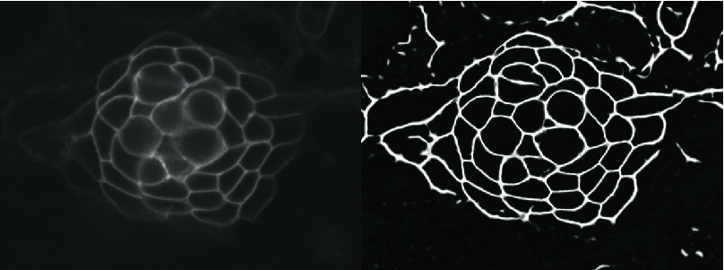

Science communication
Just like "Share" is a crucial step in the data analysis pipeline, science communication is an obligation, especially when publicly funded. Articles for the general public, talks, videos and presentations in congresses.
Video

Viscous superpower: the slug's regeneration
"Superpoder viscoso: la asombrosa regeneración de la babosa de jardín" (2026, LAVIS-UNAM Juriquilla). Audiovisual on the regeneration of the land slug Deroceras laeve, with footage and funding from PAPIIT IA206324 and IA206126.
Watch on YouTube

Do you know the molluscs of the garden?
"¿Conoces a los moluscos del jardín?" (2024, LAVIS-UNAM Juriquilla). Narrator of this introduction to the garden molluscs we study.
Watch on YouTube
Articles & press

Disemboweling the left and right (in Spanish)
A play on the Spanish word "Desentrañar", which means at once "to disembowel" and "to decipher". An accessible overview of how cells tell left from right during embryonic development, which determines the positioning of our internal organs — and perhaps the difference between the brain's hemispheres. Published in Cienciorama (UNAM).
Learn more

Presentation at the 17th IZFS meeting (2021)
Poster presentation of our work on cell rotations at the 17th meeting of the International Zebrafish Society in Montreal. Might not be available long-term.
Learn more
Featured as an interviewed expert and through coverage of our work:
- Gaceta UNAM: La medusa inmortal… (G5531, 09-01-2025), interviewed expert; reprinted in El Heraldo de Coatzacoalcos.
- Gaceta UNAM: Bioinformática, fundamental para las ciencias biomédicas (G5483, 13-06-2024).
- Gaceta UNAM: SlugAtlas… (17-02-2025); reprinted in Infobae.
- CONICET La Plata press release on the neuromast regeneration paper (2026); reprinted in Infobae and Gizmodo.
- Radio interview on Conect-Arte, Metrópolis Querétaro (2024).
Open digital platforms
- SlugAtlas — online 3D histological atlas of Deroceras laeve.
- Limaco Slug Science — educational site about D. laeve.
- Wikipedia (EN), Deroceras laeve — incorporated genomic data from the G3 article.
Social media
Science-communication threads, with original audiovisual material, on the genome of D. laeve (2025), on ForSys (2025–2026) and on neuromast regeneration, published on X (@hey_jero) and LinkedIn.
Events
- Brain Awareness Week (Semana del Cerebro), outreach to the general public (2024, 2025, 2026).
- Poster judge, XXX Academic Conference of the INB (2023).